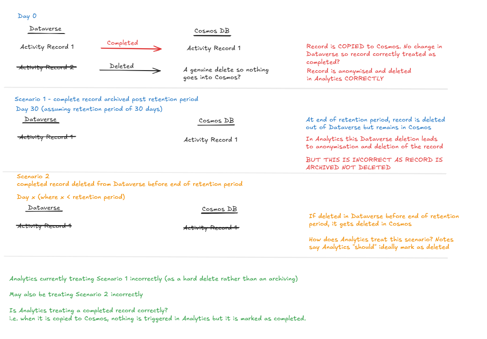

Context
In this organisation, “Core” refers to the source transactional system (Dataverse), while “Analytics” refers to the downstream reporting warehouse.
The “storage solution” is a retention mechanism that archives completed activity records into a Cosmos database after a defined period.
This spike investigates whether the current Analytics logic correctly distinguishes between:
- archived records (which should remain analytically valid) and
- hard deleted records (which should be removed or anonymised)
The investigation uncovered ambiguity in how deletion and archival states are inferred downstream, creating potential data integrity and reporting risks.
Objective
The objective of this spike was to review and understand the storage solution and raise any questions or comments to discuss prior to next steps.
Observations
The current process does not distinguish between archived activity records and deleted activity records. Instead all records no longer in Dataverse are considered as deleted. This creates ambiguity between different types of records:
- Completed then archived (should be included in analytics)
- Deleted before completed (should be removed or anonymised)
Therefore there is a very real risk that we are marking activity records as deleted and anonymising them when in fact they are not hard deletions but archived records instead.
It is not clear whether Core itself tracks the difference between activity records that have been archived and records that have been hard deleted. Or whether this distinction is something Analytics will have to infer.
If Cosmos records cannot be altered (immutable), they provide a robust point-in-time log of archived activity. If however they are mutable, they may not be trustworthy to be used in Analytics logic.
Existing Logic
As I understand it, the existing logic is as follows:
- If a record exists in both Dataverse and Cosmos, it appears to be treated as a record which has been completed but not yet archived.
- If a record exists only in Cosmos, it appears to be treated as an archived record.
- If a record exists in neither, it appears to be treated as a deleted record (before or after completion).
Questions
- What is the mechanism in Core to distinguish between completed records and deleted records?
- Is it a change of state?
- Is it a change of status?
- Does an audit table get updated?
- If so, does Core expose this distinction to downstream systems? (Can we make use of this mechanism in Analytics?)
- If there is no mechanism and we are looking to infer record status from timestamps, what logic and which timestamp columns represent a completed record, a deleted record, a copied record?
- When the record is deleted from Cosmos before the end of the retention period, does Analytics process this case correctly? i.e. it is treated as a completed record prior to the deletion and then treated as a deleted record after.
- When a record is completed (and not deleted), is this treated correctly in Analytics?
- Judging by the examples it appears that Cosmos records are immutable but for completeness I would want that clarified.
- Are there any other instances / states that lead to activity records being copied to Cosmos e.g. if they are cancelled? And if so, do we need to factor these in?
- How many of the Analytics customers have this storage solution? (How big of a risk is this?)

What Happened Next?
This piece of work is still ongoing and the team is trying to fully understand the deletion and anonymisation process used in Core. Once this is understood we can then investigate what needs to be done in Analytics to mirror this logic.